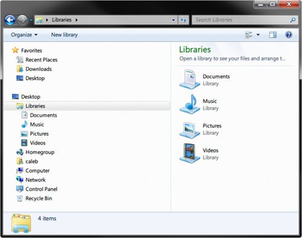

1장 시작하기
컴퓨터 프로그래밍이란 컴퓨터의 작동 방식을 정의하는 프로그램을 작성하는 예술이자 기술이며, 과학이다. 이 책에서는 구글에서 고안한 Go라는 프로그래밍 언어를 이용해 컴퓨터 프로그램을 작성하는 방법을 알려준다.
Go는 고급 기능과 명료한 문법을 지닌 일반 목적용 프로그래밍 언어다. Go는 다양한 플랫폼에서 폭넓게 이용할 수 있고, 견고하고 잘 문서화된 공통 라이브러리, 그리고 훌륭한 소프트웨어 공학적 원칙에 초점을 두고 있어 프로그래밍 언어를 처음 배울 때 적합한 언어다.
Go(및 대부분의 프로그래밍 언어)를 이용해 소프트웨어를 작성하는 과정은 상당히 직관적이다.
- 요구사항 수집
- 해결책 모색
- 소스코드를 작성해 해결책을 구현
- 소스코드를 실행파일로 컴파일
- 동작 여부를 확인하기 위한 프로그램 실행과 테스트
이 과정은 반복적이고(여러 번에 걸쳐 이뤄진다는 의미다) 그 과정들은 대개 겹친다. 하지만 Go를 이용해 우리의 첫 번째 프로그램을 작성하기에 앞서 이해해야 할 선수 개념이 몇 가지 있다.
1.1 파일과 폴더
파일은 이름을 지닌 단위로 저장되는 데이터의 모음이다. 현대 운영체제(윈도우나 맥 OSX 같은)에는 굉장히 다양한 유형의 정보가 저장된 수백 만 개의 파일이 들어 있다. 이러한 유형의 정보로는 텍스트 문서에서부터 실행 프로그램, 멀티미디어 파일에까지 이른다.
모든 파일은 컴퓨터에 동일한 방식으로 저장된다. 모든 파일에는 이름과 한정된 크기(바이트로 계산되는), 관련 형식이 있다. 보통 파일의 형식은 파일의 확장자(파일명에서 마지막 . 다음에 나오는 부분)로 표시된다. 예를 들어, hello.txt라는 이름의 파일에는 텍스트 데이터를 나타내는 데 사용되는 txt 확장자가 포함돼 있다.
폴더(디렉터리라고도 하는)는 파일을 함께 묶는 데 사용된다. 폴더는 다른 폴더도 포함할 수 있다. 윈도우 파일과 폴더 경로(위치)는 \(백슬래시) 문자로 표현된다(예: C:\Users\john\example.txt). example.txt는 파일명이고, john이라는 폴더에 들어 있는데, 이 폴더 자체는 C 드라이브(윈도우에서 기본 물리 하드디스크를 나타내는)에 저장된 Users 폴더에 들어 있다. OSX(그리고 다른 대부분의 운영체제)에서는 /(정방향 슬래시) 문자로 파일과 폴더 경로를 나타낸다(예: /Users/john/example.txt). 윈도우에서 example.txt가 파일명인 것과 마찬가지로 이 파일은 john이라는 폴더에 들어 있고, 이 폴더 자체는 Users라는 폴더에 들어 있다. 윈도우와는 달리 OSX에서는 파일이 저장되는 드라이브 문자를 명시하지 않는다.
윈도우
윈도우에서는 파일 탐색기를 이용해 파일과 폴더를 열람할 수 있다('내 컴퓨터'를 더블클릭하거나 Win+E를 누른다).

OSX
OSX에서는 파인더(Finder, 맨 하단 좌측에 놓인 얼굴 아이콘인 파인더 아이콘을 클릭해서 열 수 있는)파일과 폴더를 열람할 수 있다.

1.2 터미널
오늘날 컴퓨터와의 상호작용은 대부분 세련된 그래픽 사용자 인터페이스(GUI, Graphic User Interface)를 통해 이뤄진다. 우리는 키보드와 마우스, 터치스크린을 이용해 화면상에 표시된 시각적 버튼이나 다른 유형의 제어기와 상호작용한다.
하지만 늘 이런 식은 아니었다. GUI가 출현하기 전에는 터미널이 있었다. 터미널은 컴퓨터에 대한 단순한 텍스트 중심의 인터페이스로서, 화면상의 버튼을 조작하는 것이 아니라 명령을 실행하고 응답을 받는 구조다. 우리는 컴퓨터와 대화를 나눴던 것이다.
그리고 대부분의 컴퓨터 세계에서는 터미널을 과거의 유물로 남겨둔 것처럼 보일 수도 있지만 사실 터미널은 여전히 대부분의 컴퓨터 상에서 대부분의 프로그래밍 언어에서 기초적인 사용자 인터페이스로 사용되고 있다. Go 프로그래밍 언어도 마찬가지이므로 Go로 프로그램을 작성하기에 앞서 터미널의 기본적인 동작 방식을 이해할 필요가 있다.
윈도우
윈도우에서는 윈도우 키 + R(윈도우 키를 누른 상태에서 R을 누른다)를 누른 다음 cmd.exe를 입력하고 엔터 키를 쳐서 터미널(명령 프롬프트로도 알려져 있다)을 실행할 수 있다. 그러면 아래와 같은 검정색 창이 나타날 것이다.

기본적으로 명령줄은 홈 디렉터리에서 시작한다. (내 경우 홈 디렉터리는 C:\Users\caleb이다) 명령을 실행하려면 명령어를 입력하고 엔터 키를 치면 된다. 디렉터리의 내용을 나열하는 dir 명령어를 입력해 보자. 그럼 다음과 같은 결과가 나타날 것이다.
C:\Users\caleb>dir
Volume in drive C has no label.
Volume Serial Number is B2F5-F125
홈 디렉터리에 담긴 파일과 폴더의 목록이 나온다. cd 명령어를 이용하면 디렉터리를 변경할 수 있다. 예를 들어, Desktop이라는 폴더가 있을 것이다. cd Desktop을 입력한 후 dir을 입력하면 Desktop 디렉터리의 내용을 볼 수 있다. 홈 디렉터리로 되돌아가려면 특별한 디렉터리 이름인 ..(두 개의 점이 연이어 입력)을 이용해 cd ..라고 입력하면 된다. 점 하나는 현재 폴더(작업 폴더라고 알려진)를 나타내므로 cd .은 아무런 일도 하지 않는다. 사용할 수 있는 명령어는 훨씬 더 많지만 처음 시작하는 데는 이 정도면 충분할 것이다.
OSX
OSX에서는 파인더 → 응용 프로그램 → 유틸리티 → 터미널로 가서 터미널을 실행할 수 있다. 그럼 다음과 같은 창이 나타날 것이다.

기본적으로 터미널은 홈 디렉터리에서 시작한다. (내 경우 홈 디렉터리는 /Users/caleb이다) 명령을 실행하려면 명령어를 입력하고 엔터 키를 치면 된다. 디렉터리의 내용을 나열하는 ls 명령어를 입력해 보자. 그럼 다음과 같은 결과가 나타날 것이다.
caleb-min:~ caleb$ ls
Desktop Downloads Movies Pictures
Documents Library Music Public
홈 디렉터리에는 위와 같은 파일과 폴더가 들어 있다(이 경우 파일은 아무것도 없다). cd 명령어를 이용하면 디렉터리를 변경할 수 있다. 예를 들어, Desktop이라는 폴더가 있을 것이다. cd Desktop을 입력한 후 ls를 입력하면 Desktop 디렉터리의 내용을 볼 수 있다. 홈 디렉터리로 되돌아가려면 특별한 디렉터리 이름인 ..(두 개의 점이 연이어 입력)을 이용해 cd ..라고 입력하면 된다. 점 하나는 현재 폴더(작업 폴더라고 알려진)를 나타내므로 cd .은 아무런 일도 하지 않는다. 사용할 수 있는 명령어는 훨씬 더 많지만 처음 시작하는 데는 이 정도면 충분할 것이다.
1.3 텍스트 편집기
프로그래머가 소프트웨어를 작성하는 데 사용하는 기본적인 도구는 텍스트 편집기다. 텍스트 편집기는 워드 프로세싱 프로그램(마이크로소프트 워드, 오픈 오피스, ...)과 비슷하지만 그러한 프로그램과는 달리 형식화를 지원하지 않고(굵은 글씨체나 기울임꼴 등을 지원하지 않는다) 일반 텍스트만을 대상으로 동작한다. OSX와 윈도우에는 모두 텍스트 편집기가 탑재돼 있지만 기능상의 제약이 심하므로 더 나은 프로그램을 설치하길 권장한다.
이러한 소프트웨어를 좀 더 쉽게 설치할 수 있게 이 책의 웹 사이트인 http://www.golang-book.com/에서 설치 프로그램을 내려받을 수 있다. 설치 프로그램은 Go 도구 모음을 설치하고 환경변수를 설정하며 텍스트 편집기를 설치할 것이다.
윈도우
윈도우에서는 설치 프로그램이 Scite 텍스트 편집기를 설치할 것이다. 이 프로그램은 시작 → 모든 프로그램 → Go → Scite로 가서 실행할 수 있다. 그럼 다음과 같은 프로그램이 나타날 것이다.

텍스트 편집기에는 텍스트를 입력할 수 있는 크고 하얀 텍스트 영역이 포함돼 있다. 텍스트 영역 왼쪽에는 줄 번호를 볼 수 있다. 이 창의 하단에는 파일과 해당 파일 내에서의 현재 위치에 관한 정보가 표시되는 상태표시줄이 있다(현재 1번째 줄, 1번째 열에 위치해 있으며, 평소처럼 텍스트가 입력 중이며, 윈도우 형식의 개행 문제를 사용하고 있다).
파일을 열려면 File → Open으로 가서 원하는 파일을 찾아 선택하면 된다. 파일을 저장하려면 File → Save나 File → Save As을 선택하면 된다.
텍스트 편집기에서 작업할 때 키보드 단축키를 알아두면 유용하다. 단축키는 각 메뉴의 오른쪽에 나열돼 있다. 다음은 굉장히 자주 사용되는 단축키다.
- Ctrl + S : 현재 파일을 저장한다.
- Ctrl + X : 현재 선택된 텍스트를 잘라낸다(선택된 텍스트를 제거한 후 나중에 붙여넣을 수 있게 클립보드에 집어넣음).
- Ctrl + C : 현재 선택된 텍스트를 복사한다.
- Ctrl + V : 현재 클립보드에 들어 있는 내용을 붙여넣는다.
- 이동할 때는 화살표 키를 이용한다. Home을 누르면 줄이 시작되는 지점으로 이동하고 End를 누르면 줄 끝으로 이동한다.
- 마우스를 이용하지 않고 텍스트를 선택하려면 Shift 키를 누른 상태에서 화살표 키를 사용한다(또는 Home이나 End).
- Ctrl + F : 파일의 내용을 검색하는 데 사용할 수 있는 파일 내에서 찾기 대화상자가 나타난다.
OSX
OSX의 경우 설치 프로그램은 Text Wrangler 텍스트 편집기를 설치한다.

윈도우의 Scite와 마찬가지로 Text Wrangler에도 텍스트를 입력하는 커다란 흰색 영역이 있다. 파일을 열려면 File → Open으로 가서 원하는 파일을 찾아 선택하면 된다. 파일을 저장하려면 File → Save이나 File → Save As를 선택하면 된다. 다음은 유용한 키보드 단축키다(Command는 ⌘ 키다).
- Command + S : 현재 파일을 저장한다.
- Command + X : 현재 선택된 텍스트를 잘라낸다(선택된 텍스트를 제거한 후 나중에 붙여넣을 수 있게 클립보드에 집어넣음).
- Command + C : 현재 선택된 텍스트를 복사한다.
- Command + V : 현재 클립보드에 들어 있는 내용을 붙여넣는다.
- 이동할 때는 화살표 키를 이용한다.
- Command + F : 파일의 내용을 검색하는 데 사용할 수 있는 파일 내에서 찾기 대화상자가 나타난다.
1.4 Go 도구
Go는 컴파일형 프로그래밍 언어인데, 이는 소스 코드(여러분이 작성한 코드)가 컴퓨터가 이해할 수 있는 언어로 번역된다는 의미다. 따라서 Go 프로그램을 작성하기 전에 Go 컴파일러가 필요하다.
설치 프로그램은 자동으로 Go도 설치할 것이다. 이 책에서는 Go 언어의 버전 1을 사용하겠다. (더 자세한 정보는 http://www.golang.org를 참고한다)
모든 것이 제대로 작동하도록 만들어보자. 터미널을 열고 다음 명령어를 입력한다.
go version
그러면 다음과 같은 출력 결과를 볼 수 있다.
go version go1.0.2
버전 번호는 약간 다를 수도 있다. 명령어를 인식할 수 없다는 내용의 오류가 발생하면 컴퓨터를 재시작한다.
Go 도구 모음은 다양한 명령어와 부명령어로 구성돼 있다. 다음 명령을 입력해서 명령어 목록은 확인할 수 있다.
go help
이어지는 장에서 각 명령어가 어떻게 사용되는지 살펴보겠다.
| 홈 | 다음 → |